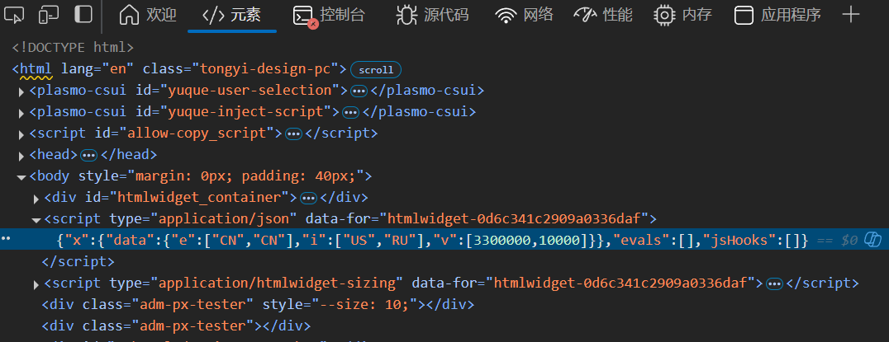

# data.frame to test
arcs <- jsonlite::fromJSON(
'[
{
"e": "CN",
"i": "US",
"v": 3300000
},
{
"e": "CN",
"i": "RU",
"v": 10000
}
]'
)
print(arcs)
#> e i v
#> 1 CN US 3300000
#> 2 CN RU 1000007 The Full Monty
本章以gio.js库为基础，学习输入数据的处理方式。gio.js用来在三维地球图上，通过曲线绘制国家之间的联系。下面是该库的一个简单示例：
<!DOCTYPE html>
<html xmlns="http://www.w3.org/1999/xhtml" lang="" xml:lang="">
<head>
<!-- Import libraries -->
<script src="https://cdnjs.cloudflare.com/ajax/libs/three.js/110/three.min.js"></script>
<script src="https://raw.githubusercontent.com/syt123450/giojs/master/build/gio.min.js"></script>
</head>
<body>
<!-- div to hold visualisation -->
<div id="globe" style="width: 200px; height: 200px"></div>
<!-- Script to create visualisation -->
<script>
// data is demo
var data = [
{
"e": "CN",
"i": "US",
"v": 3300000
},
{
"e": "CN",
"i": "RU",
"v": 10000
}
]
var container = document.getElementById("globe");
var controller = new GIO.Controller(container);
controller.addData(data);
controller.init();
</script>
</body>
</html>Creating Package
同上一章一样：
- 首先创建
gioR包及scaffold：
usethis::create_package("gio")
htmlwidgets::scaffoldWidget("gio")- 然后下载依赖JS库，修改
inst/htmlwidgets/gio.yaml文件
# create directories for JS dependencies
dir.create("./inst/htmlwidgets/three", recursive = TRUE)
dir.create("./inst/htmlwidgets/gio", recursive = TRUE)
# download JS dependencies
three <- paste0(
"https://cdnjs.cloudflare.com/ajax/",
"libs/three.js/110/three.min.js"
)
gio <- paste0(
"https://raw.githubusercontent.com/",
"syt123450/giojs/master/build/gio.min.js"
)
download.file(three, "./inst/htmlwidgets/three/three.min.js")
download.file(gio, "./inst/htmlwidgets/gio/gio.min.js")dependencies:
- name: three
version: 110
src: htmlwidgets/three
script: three.min.js
- name: gio
version: 2.0
src: htmlwidgets/gio
script: gio.min.js- 修改
int/htmlwidgets/gio.js文件中的函数：因为gio.js直接使用widget创建的el对象，所以我们无需使用var container = document.getElementById("globe")来获取el对象，而是直接使用el对象；同时需要的数据由x对象传入。
// gio.js
HTMLWidgets.widget({
name: 'gio',
type: 'output',
factory: function(el, width, height) {
// TODO: define shared variables for this instance
return {
renderValue: function(x) {
// var container = document.getElementById("globe");
var controller = new GIO.Controller(el);
controller.addData(x.data);
controller.init();
},
resize: function(width, height) {
// TODO: code to re-render the widget with a new size
}
};
}
});- 最后修改
R/gio.R文件：上面的js需要输入对象x要有data属性，所以这里需要修改gio函数的参数和x的数据结构。
# 注意：将message修改为data
gio <- function(data, width = NULL, height = NULL, elementId = NULL) {
# forward options using x
x = list(
data = data
)
# create widget
htmlwidgets::createWidget(
name = 'gio',
x,
width = width,
height = height,
package = 'gio',
elementId = elementId
)
}- 最后运行
devtools::document();devtools::load_all()加载函数，使用gio(data)创建widget。
Working with Data
现在只需要我们创建gio.js需要的json数据，即可创建gio.js的widget。阅读jio.js的文档，其要求的数据结构为：e——exporting country, i——importing country, v——value。
[
{
"e": "CN",
"i": "US",
"v": 3300000
},
{
"e": "CN",
"i": "RU",
"v": 10000
}
]我们使用R读取该JSON数据，会发现数据结构转为data.frame。
当我们直接将arcs传入gio函数时，会发现只有一个空白的widget。使用console.log或查看HTML源码，会发现传入的数据结构和预期的不符。
{
"x":{
"data":{
"e":["CN","CN"],
"i":["US","RU"],
"v":[3300000,10000]
}
},
"evals":[],
"jsHooks":[]
}
出现上述情况的原因是：row-wise的JSON被jsonlite::fromJSON自动转换为了dataframe，而htmlwidgets的createWidget函数会自动将dataframe转为column-wise的JSON，从而导致数据结构不符。
# column-wise
jsonlite::toJSON(arcs, dataframe = "columns")
#> {"e":["CN","CN"],"i":["US","RU"],"v":[3300000,10000]}
# row-wise
jsonlite::toJSON(arcs, dataframe = "rows")
#> [{"e":"CN","i":"US","v":3300000},{"e":"CN","i":"RU","v":10000}]Transforming Data
下面介绍一些确保dataframe被row-wise的方法。
Using JavaScript
htmlwidgets JavaScript 库提供了dataframeToD3函数，将column-wise的JSON转为row-wise的JSON。
// gio.js
renderValue: function(x) {
// long to wide
x.data = HTMLWidgets.dataframeToD3(x.data);
var controller = new GIO.Controller(el);
controller.addData(x.data);
controller.init();
}Modify Serialiser
正如前面讲到的那样，我们可以设置htmlwidgets的createWidget函数自动将dataframe转为row-wise的JSON。
下面是createWidget函数的底层逻辑，可以看到只要修改dataframe参数为"rows"即可。
function (x, ..., dataframe = "columns", null = "null",
na = "null", auto_unbox = TRUE, use_signif = TRUE,
digits = getOption("shiny.json.digits", 16), force = TRUE,
POSIXt = "ISO8601", UTC = TRUE, rownames = FALSE,
keep_vec_names = TRUE, strict_atomic = TRUE)
{
if (strict_atomic)
x <- I(x)
jsonlite::toJSON(x, dataframe = dataframe, null = null, na = na,
auto_unbox = auto_unbox, digits = digits, force = force,
use_signif = use_signif, POSIXt = POSIXt, UTC = UTC,
rownames = rownames, keep_vec_names = keep_vec_names,
json_verbatim = TRUE, ...)
}htmlwidgets巧妙地利用了属性，可以将rows设置为x对象的TOJSON_ARGS属性，从而实现row-wise处理。
gio <- function(data, width = NULL, height = NULL,
elementId = NULL) {
# forward options using x
x = list(
data = data
)
# serialise data.frames to wide (not long as default)
attr(x, 'TOJSON_ARGS') <- list(dataframe = "rows")
# create widget
htmlwidgets::createWidget(
name = 'gio',
x,
width = width,
height = height,
package = 'gio',
elementId = elementId
)
}Replace Serialiser
也可以为x对象添加TOJSON_FUNC属性值，直接替换serialiser函数。
gio <- function(data, width = NULL, height = NULL,
elementId = NULL) {
# forward options using x
x = list(
data = data
)
# replace serialiser
attr(x, 'TOJSON_FUNC') <- gio_serialiser
# create widget
htmlwidgets::createWidget(
name = 'gio',
x,
width = width,
height = height,
package = 'gio',
elementId = elementId
)
}
# serialiser
gio_serialiser <- function(x){
jsonify::to_json(x, unbox = TRUE)
}Modify the Data
我们也可以直接修改data数据类型。
x = list(
data = apply(data, 1, as.list)
)Pros and Cons
上述每种方法都有其优缺点。最好的方法可能是仅在需要的地方修改默认序列化器（Modify Serialiser），这是本书其余部分使用的方法。完全替换序列化器（Replace Serialiser）应该是不必要的，只有在你非常熟悉序列化并真正看到需要它时才这样做。此外，HTMLWidgets 的序列化器扩展了 jsonlite, 允许转换 JavaScript 代码，这将在后面派上用场。在 JavaScript 中转换 data （Using JavaScript）有一个缺点，HTMLWidgets.dataframeToD3 不能应用于整个 x 对象，它只会作用于包含column-wise data (x.data) 的子集，这往往会导致代码笨拙，因为在不同地方使用该函数。
On Print Method
gio.js提供了一些themes，我们可以为其x对象添加style`属性。
// gio.js
renderValue: function(x) {
var controller = new GIO.Controller(el);
controller.addData(x.data);
controller.setStyle(x.style); // set style
controller.init();
}此时，我们除了前面讲到的修改R/gio.R文件中函数的data对象，还可以直接为x对象添加style。使用print()我们可以清楚地看到数据结构。
g <- gio(arcs) # nothing renders
g # visualisation rendersprint(g$x)
#> $data
#> e i v
#> 1 CN US 3300000
#> 2 CN RU 10000
#>
#> attr(,"TOJSON_ARGS")
#> attr(,"TOJSON_ARGS")$dataframe
#> [1] "rows"在R/gio.R文件中，创建添加属性的函数：
#' @export
gio_style <- function(g, style = "magic"){
g$x$style <- style
return(g)
}g1 <- gio(arcs)
g2 <- gio_style(g1, "juicyCake")
g2htmlwidgets系列包也可以被magrittr包支持，使用usethis::use_pipe()可以方便的实现管道符操作。
library(magrittr)
gio(arcs) %>%
gio_style("juicyCake")